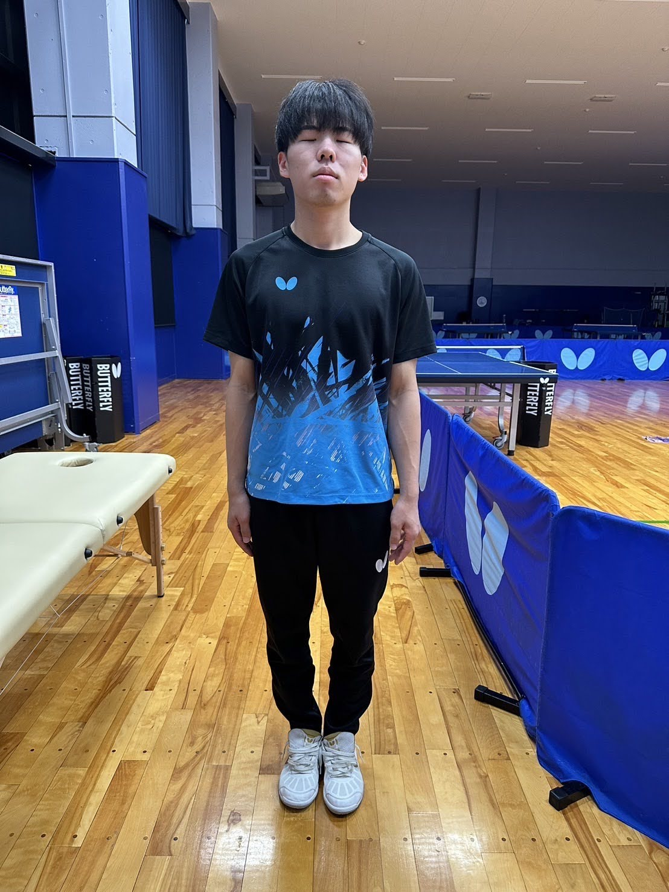

Pose detection using the MediaPipe PoseLandmarker task
モジュールの読み込みに数秒かかります...
Comparison:
2枚の画像のPoseを比較
あなたの画像をアップロードして、以前の画像と姿勢を比較することができます
推奨環境：Google Chrome
以前の画像 (サンプル画像/比較元) ▽

骨格画像をダウンロード
この骨格画像をダウンロード
| 部位 (番号) | 角度（ °） | Quaternion | |||
|---|---|---|---|---|---|
| X | Y | Z | W | ||